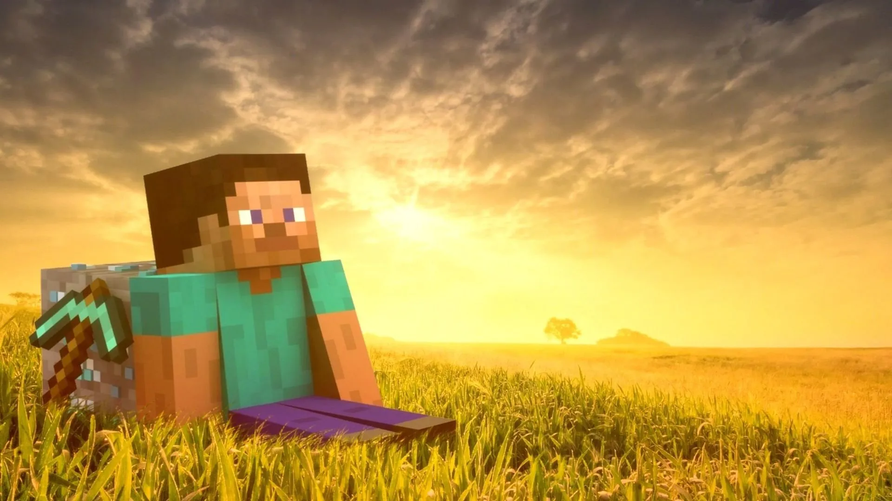

"CHAPTER 4:"
"THE MINE"
steve make he dog sit and he go to mine, he was there for searching diamonds but he find just coal and iron, so he try to fall from a very high place
and he made it!!! he saw lava from a part and the other diamonds, he where so happy because he find 4 beautiful diamonds💎💎💎💎,
while he was going home, a arrow nearly get it, he was very scared but that time no one can stop him, he put his helmet and get his sword
and tried to kill the skeleton, but then behind him he was even a spider caves, he killed the spider and then the skeleton, a zombie push im in the lava but steve drinked a resistence potion,
he exit from the lava and the cave then he sit near a block.
